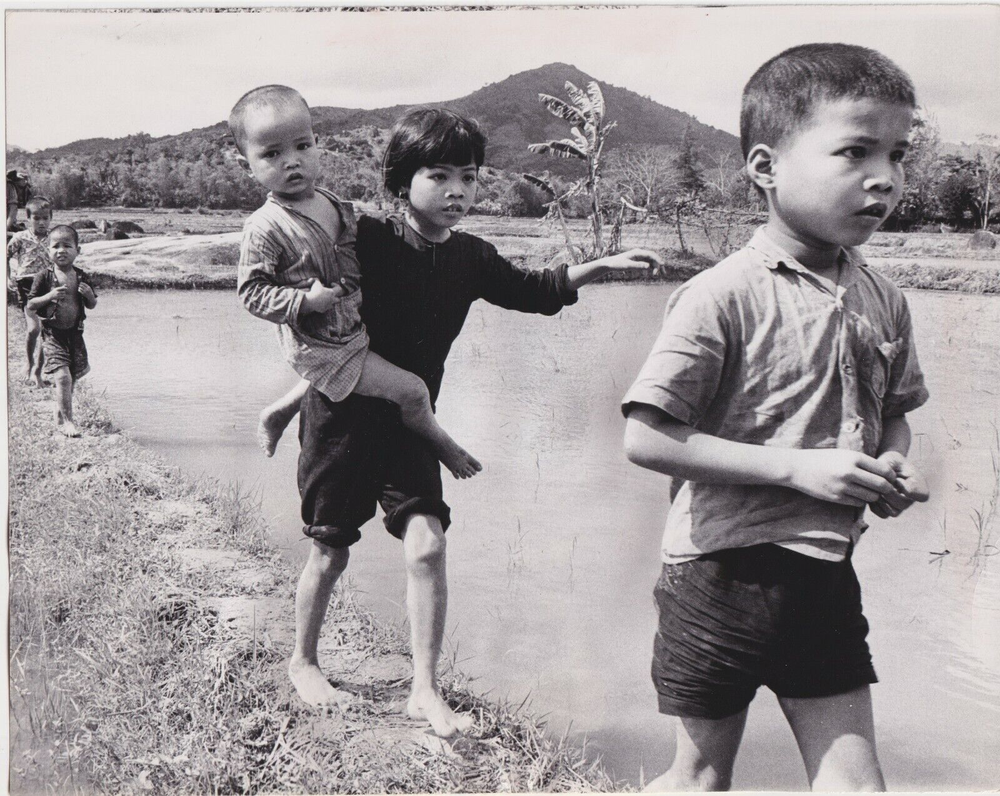
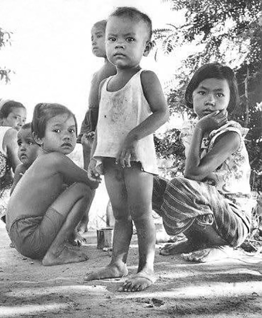
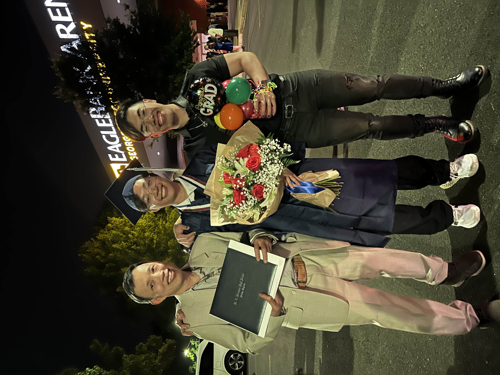
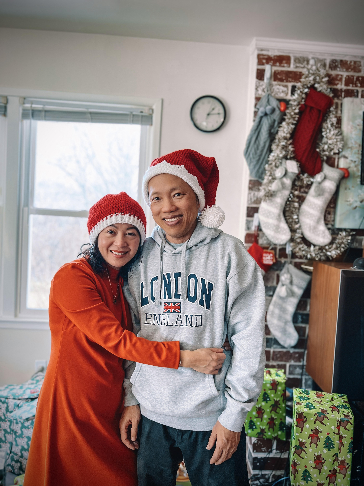

My Story
My name is Hien Minh Van Thanh. I am a Vietnamese immigrant who lived through and experienced the Vietnam War firsthand. Those challenging times shaped my resilience and dedication to building a better future.
As an entrepreneur with professional sewing skills, I used my craft not only as a means of livelihood but also as a way to express culture and creativity. I made the difficult decision to leave my beloved motherland, Vietnam, and come to the United States in hopes of providing greater opportunities for my two sons.
My journey is one of sacrifice, strength, and hope—rooted in the desire to give my family a life filled with promise and possibility.
Living Through the Vietnam War

Struggles during wartime

A glimpse into my early years
Family – My Biggest Motivation

Cherished family moments

Together through every challenge
My Beloved Spouse

My partner, my strength